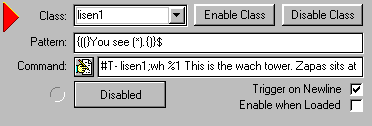

Signs |
||||||||||||
To make a sign you need 2 triggers First set up the signs to make a noise in your DS Then load your bot, Upload your dream, and take your bot in go to the sign and bump it intel you see the patterns on the bots screen it will look like: A BBB CCC D EEE
A=this tells the bot its a sound it will allays be 7 you don't need D&EEE so well replace them with * 7 BBB CCC * BBB is where the furry is standing and we need the bot to look at the furry standing there 7 (*) CCC * and CCC is left the same you should now have something that looks like this (CCC will be different for every sign) 7 (*) ' 0 * This is your pattern now you need the command you only want the bot to read the data for the sign that was hit so enable it with #T+ listen1 and you want the bot to look at the furry bumping the sign l %1 (l[twospaces]%1) when you add then together it will look like this #T+ listen1;l %1 This is your command
That is the first trigger now well make the second one The class for the second one is listen1 cause the first trigger enables it with #T+ listen1 The first one makes the bot look at the furry so the furry sees ((You see Mys'.) after all the decoding so zMUD can read it and adding the (*) so we can whisper to the furry it looks like {((}You see (*).{)} This is your pattern in the command we want to shut off listen1 so when the next sign is hit it wont read this signs info #T- listen1 and we want the bot to whisper to the furry wh %1 what the sign says adding them together will look like #T- listen1;wh %1 what the sign says This is your command
on the listen triggers you have to disable them and the sign triggers will enable them  click the "Disable Class" button in the upper right corner and un check the "Enable when loaded" in the lower right corner
When you have more then one sign zMUD will start deleting your listen triggers cause the patterns are the same just add a $ to the end of each of them
Sign 1: {((}You see (*).{)} |
||||||||||||
Created By Mys' |